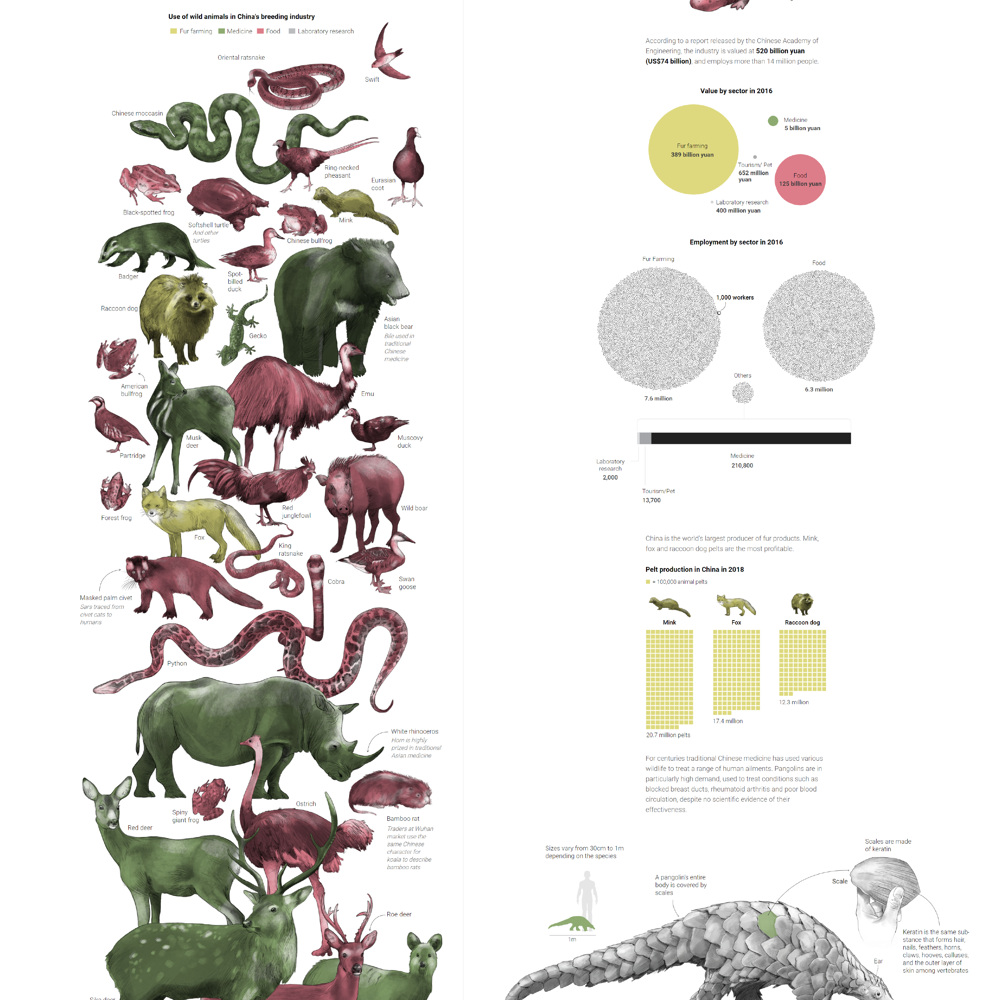
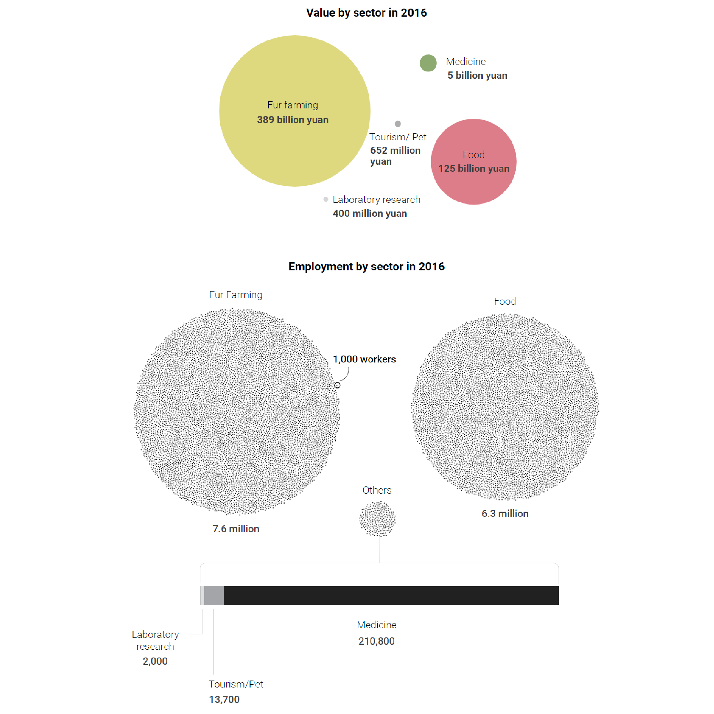
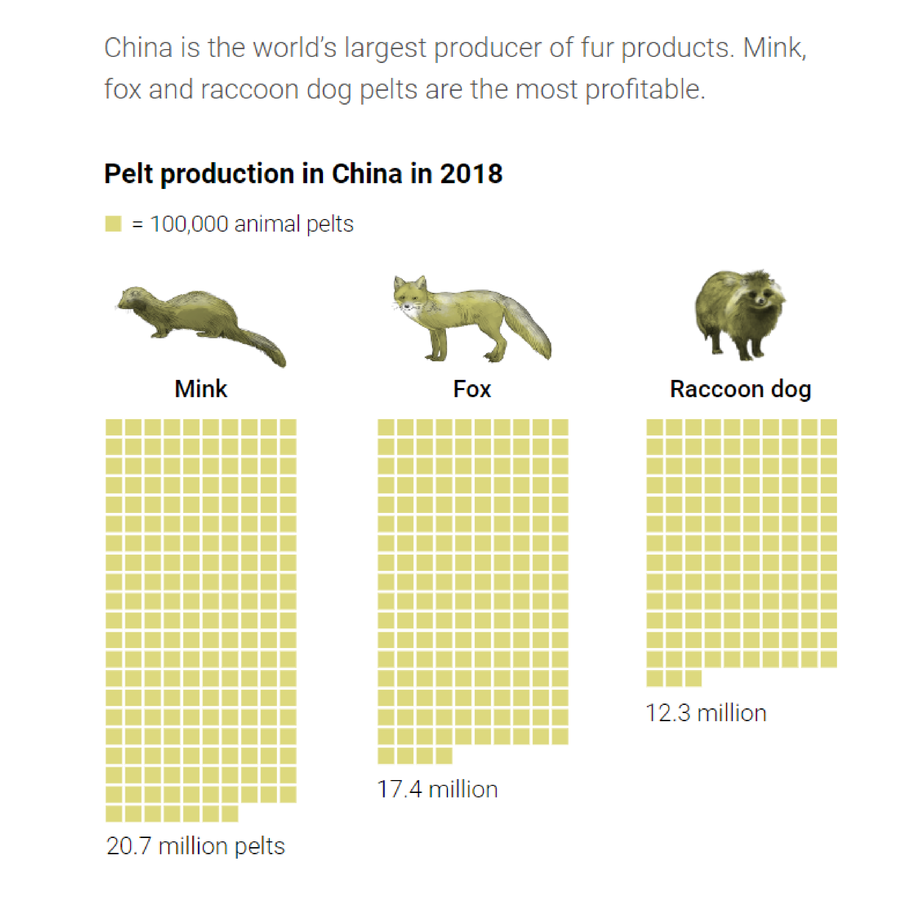
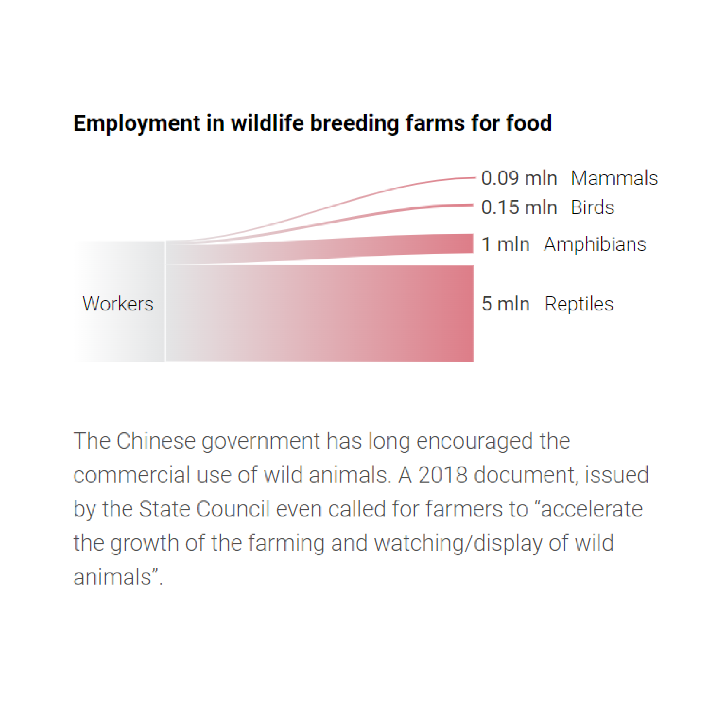

INFOGRAFÍA IMPRESA
En esta infografía, además de título, crédito, bajada y fuentes, es posible distinguir 1 gráfico grande y 3 grupos de gráficos más pequeños; indicando el más grande qué animales son utilizados para la peletería, para comida, medicina y para laboratorios; el resto muestra comparaciones de datos, usos que se dan al pangolín, y comparación de datos más específicos.
Un primer gráfico grande, que es un gráfico figurativo, Un primer pequeño, que es un gráfico no-figurativo, pues esta muestra la comparación del tamaño promedio de una persona con un pangolín.
El segundo pequeño, se trata de un gráfico no-figurativo, pues estos muestran datos de 2016 en yuan, los cuales comparan el valor y la cantidad de empleo de cada sector, en el cual supera por mucho el sector de peletería y luego el sector de comida.
Este el gráfico más grande de la infografía, donde se muestra que animales son utilizados para qué sector, en lo cual gran parte es utilizado para medicina y comida.
El último grafico pequeño, muestra como utilizan distintas partes del pangolín, el cual se utiliza como comida, y tambien se utiliza sus escamas principalmente para usos medicinales.
INFOGRAFÍA DIGITAL
Podemos darnos cuenta que se busca mantener el la coherencia del lenguaje en la presentación de la versión digital en cuanto a la versión impresa. Sin embargo se toman las libertades de poder organizar la información de una manera en que la lectura se ve guiada por el desplazamiento de la página.
A diferencia de en la versión impresa, la representación de estos datos se muestra de una manera más grande y llamativa, pudiendo realizar una comparativa más cercana a lo que se intenta demostrar al posicionar las categorías como círculos de diferentes tamaños, en comparación a lo que se da con los gráficos de barras.
En esta versión se agrega información detallada sobre la gran cantidad de animales que son sacrificados a casusa de la utilización de sus pieles, poniendo lado a lado a 3 de las especies más afectadas en el territorio.
El último gráfico aprovecha de demostrar cómo el impulso del gobierno chino sobre el uso de animales silvestres representa una importante cantidad de trabajadores.
¿Cómo podrían justificarse todas las modificaciones? ¿Se trata de una simple adaptación de datos de un sustrato a otro? Convendría pensar en una reestructuración completa del trabajo infográfico, que se hace atiendiendo a los usos y costumbres asociadas a cada medio?